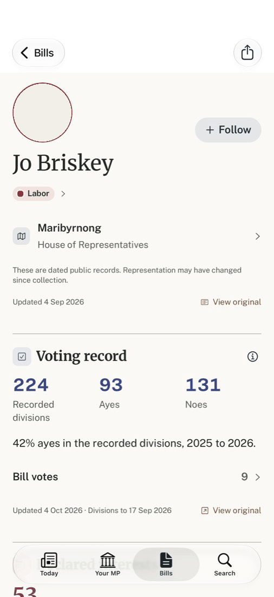
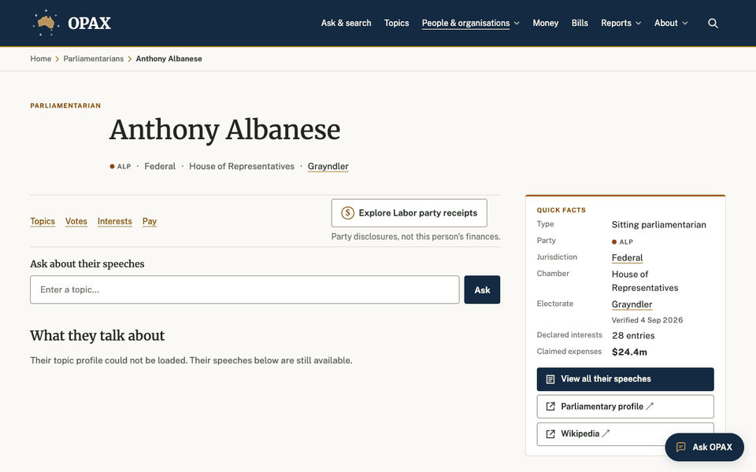

Say who they are once, then let each record block carry one figure, one short list and one source line. The quick-facts box, the per-block "Updated · View original" pairs, the ⓘ buttons and the caveat paragraphs collapse into the header and a single source line per block.
Before · iPhone, build 11 (real data; portrait drawn as the blank circle)

1 2 3 4 5 4After · iPhone wireframe
Before · web 1280px, main at a3aa6532, local render (portrait hidden)

6 7 7 8 9 10 11After · web 1280px wireframe (shown at 59%)